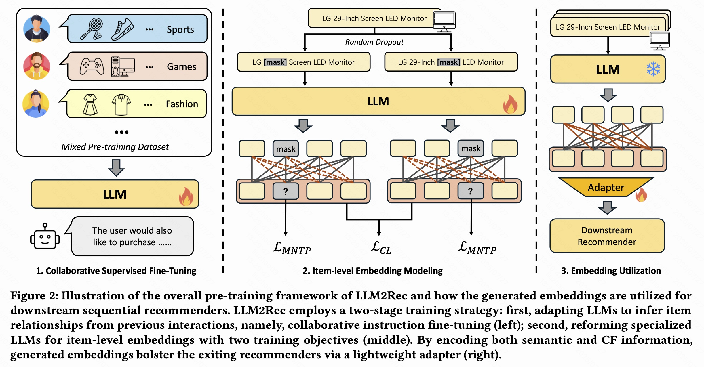
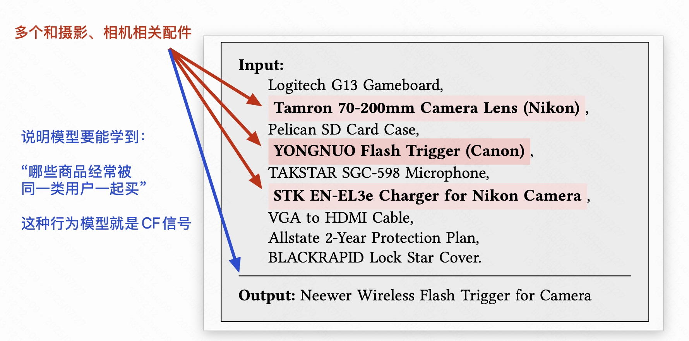
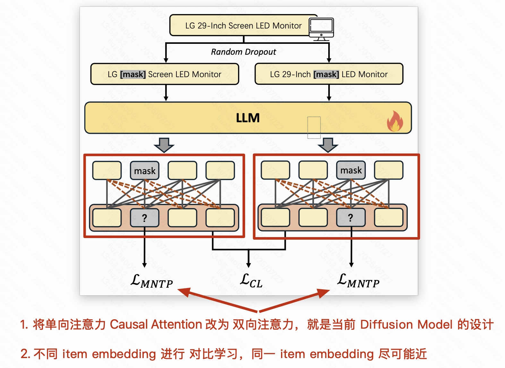
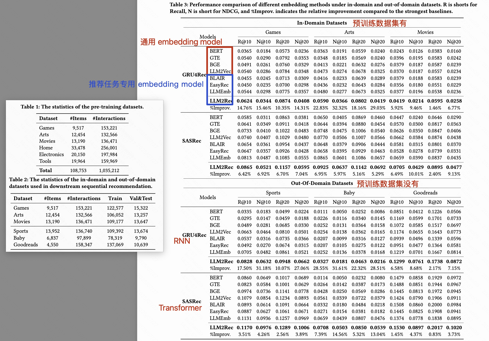
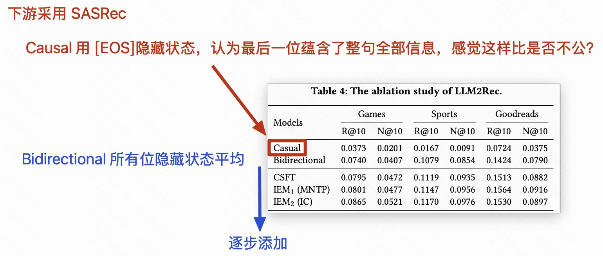
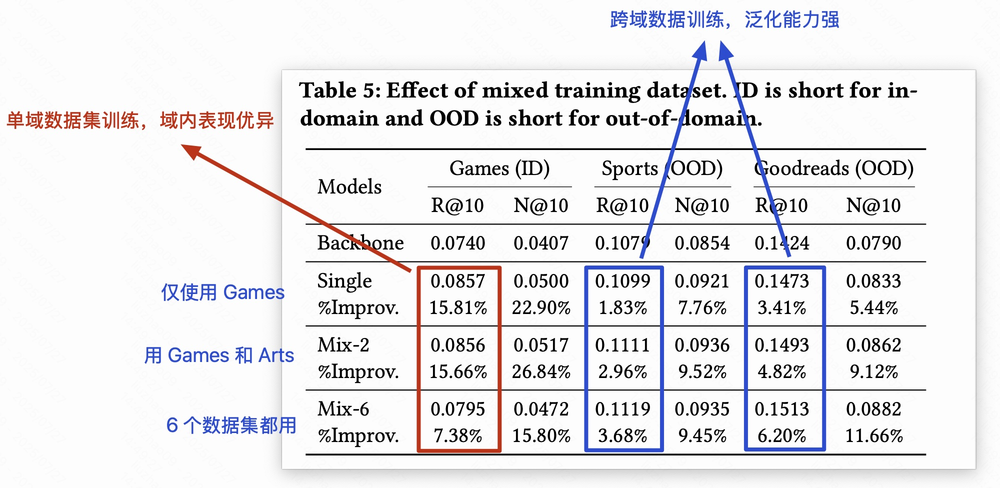
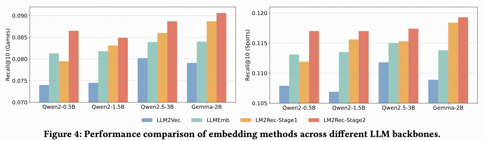
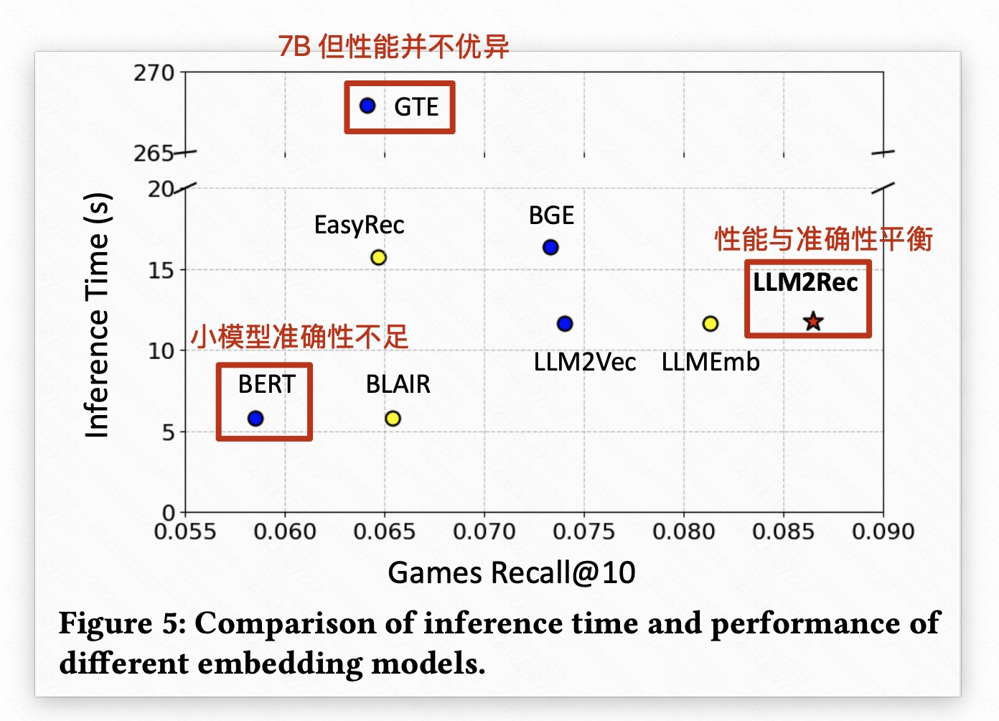

这里来学习一篇文章《LLM2Rec: Large Language Models Are Powerful Embedding Models for Sequential Recommendation》是新国立 蔡达成（Tat-Seng Chua）团队在 KDD-2025 上的工作。
论文链接：https://arxiv.org/abs/2506.21579
代码链接：https://github.com/HappyPointer/LLM2Rec
1. 背景与问题
任务
整体任务也是协同与语义的结合。
现有探索有两种：
- 一种是纯文本法：只用文本（商品介绍等）做 embedding，能泛化但丢了 CF 信号。
- 另一种是混合法：试图融合文本和 CF 信号，比如把 ID 向量和文本向量拼接、用文本指导 ID 训练、或设计融合网络（比如cross-attention）。【CCFRec 也算这类吧】本质还是主要依赖 ID 向量。
作者认为：最好的 embedding model，应该 “天生” 就能同时捕获 CF 信号和 语义知识，而不是通过外部拼拼凑凑【OneRec 中的 embedding 方式】本文旨在探索如何让 LLM 既理解文本，又成为可以泛化的 embedding 生成器，服务于推荐系统。
背景动机
- 近几年发现大语言模型（LLM）经过“监督微调”后，其实可以学会推荐相关任务。
- 作者想让LLM既能捕捉CF信号（比如哪些商品经常一起被买），又有理解文本内容的能力。
- 但是LLM原本只会做“token级别预测”（即只会预测下一个词），并不是专门为生成商品的“整体向量”设计的。

LLM2Rec 两大步骤
协同监督微调（CSFT）
- 把真实推荐场景下的用户交互序列（比如：用户买了A、B、C，接下来可能买D）用来微调 LLM，让它能够学习到商品间的 CF 信号。
- 实例：比如任天堂的一堆游戏（马里奥、动物森友会等），这些游戏经常被同一批用户一起买，经过训练后，这些游戏的向量会变得更接近。
商品级嵌入建模（IEM）
- 在前面基础上，对 LLM 做进一步的结构和目标优化，让它更适合生成“商品级的向量”。
- 主要包括两个技术：
- 双向注意力+掩码预测（MNTP）：让模型可以更全面地理解每个商品的文本信息。
- 商品级对比学习：让同一个商品的不同“视角”聚在一起，不同商品拉得更远，这样嵌入更加区分度高。
2. 方法

2.1 Collaborative Supervised Fine-tuning（CSFT）
输入其实就是一串商品标题的列表，之间只用逗号隔开，没有复杂的模板，以防止模型学到无关的模板信息。
每次只让模型根据前面的商品序列“自回归地”生成下一个商品标题：

2.2 Item-level Embedding Modeling
大语言模型（LLM，比如GPT）通常都是单向的 decoder 模型，它们被设计用于“自回归”（即一个词一个词地预测下一个词）。
但是，这种单向预测机制在生成高质量的item embedding时表现一般。因为生成 embedding 通常需要双向地同时看前面和后面的上下文信息。
作者希望能够综合两种模型的优点：
- 单向decoder（LLM）：拥有强大的语义理解能力。
- 双向encoder模型（如BERT）：更适合生成高质量的上下文感知嵌入。
因此，作者试图对LLM进行改造，使它同时拥有 encoder 的双向理解能力，来生成高质量的商品嵌入。

2.2.1 从单向注意力 → 双向注意力（Bidirectional attention）
单向注意力（Causal Attention）：
- 传统的decoder LLM在生成一个词的嵌入时，只能看到它前面的词，无法看到后面的词，这叫做“因果注意力（Causal attention）”。
为什么要转为双向注意力？
- 在生成嵌入时，我们希望模型能看到整个商品描述的全部内容（即：商品标题或描述中的所有词）。
- 因此，作者去掉了单向的限制，改造成“双向注意力”：生成一个词的嵌入时，可以同时参考它前后所有词的信息。
怎么训练这种双向的LLM？（Masked Next Token Prediction，简称MNTP）
- 在商品的文本序列中，随机遮盖掉一些词（随机mask），然后让LLM根据前后词的信息预测出这些被mask的词。
- 这样LLM逐渐就能习惯于双向地理解商品的文本，从而生成更有效的嵌入。
- MNTP的损失函数：
$$ \mathcal{L}{MNTP}=-\sum{i\in I}\sum_{s=0}^{\ell_i}p(t_{i,s}|t_{i,<s}) $$
2.2.2 商品级别的对比学习（Item-level Contrastive Learning）
为什么需要对比学习？
- 上一步的方法（MNTP）还是以词（token）为单位，而作者希望获得的是商品级（整个句子或描述）的整体嵌入。
- 单纯把词级嵌入平均（average-pooling）是一种简单方法，但不一定足够好。
对比学习怎么做？
- 每个商品文本会随机生成两个略有差异的版本（比如随机遮盖不同的词），让模型去分别生成两个版本的商品嵌入。
- 模型的目标：
- 同一个商品的两个版本嵌入尽可能接近；
- 不同商品的嵌入尽可能远离。
- 这样生成的嵌入就更容易区分不同的商品，也能更好地表示商品本身。
- 对比学习的损失函数：
$$ \mathcal{L}{IC}=-\sum{i\in I}\log\frac{\exp\left(\mathcal{E}(\tilde{t}_i^1)\mathcal{E}(\tilde{t}i^2)^\top/\tau\right)}{\sum{j\in I}\exp\left(\mathcal{E}(\tilde{t}_j^1)\mathcal{E}(\tilde{t}_j^2)^\top/\tau\right)} $$
我疑惑这里没有用 logit shift 仅仅通过这个阶段的训练改变的目标是不是太大了？原本 自回归的 causal mask 模型的 hidden state 本质上更关注下一个位置的 token 预测。每个位置输出的 hidden state 与下一个 token 紧密相关，而非自己当前 token 本身。BERT是在预测当前位置token，而不是下一个位置token。
2.3 喂给序列推荐模型
把 LLM2Rec 生成的每个 item 的 embedding $z_i$，用一个简单的线性变换（就是加个“门槛”，w乘上再加b，公式：$z'_i = Wz_i + b$）。
这个线性层参数（W和b）可以在下游推荐系统训练时一起优化，适配到下游的场景。
3. 实验
3.1 主实验

3.2 消融实验

3.3 其他
3.3.1 域分析

3.3.2 LLM Backbones 分析

3.3.3 性能分析

4. 总结
感觉直接从 next-token-prediction 转变为 mask-token-prediction 的地方，是不是可能导致模型变化很大，因为也在看 Diffusion LLM 的文章，他们一般在基于自回归 next-token-prediction 上预训练，然后使用 mask-token-prediciton 的时候由于当前位置预测的任务变了，所有做了一个 logit shift ，这样输出的 hidden state 不会有太大变化，能够继续训练，这里却不是。是否是因为没这样做才导致 IEM1(MNTP) 在消融实验里提升很小。